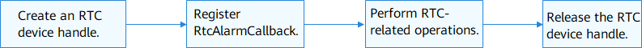

RTC Usage Guidelines¶
How to Use¶
During the OS startup, the HDF loads the RTC driver based on the configuration file. The RTC driver detects the RTC component and initializes the driver.
Figure 1 illustrates the process of an RTC device.
Figure 1 Process of using an RTC device

Creating an RTC Device Handle¶
After the RTC driver is loaded successfully, you can use the API provided by the HDF and call APIs of the RTC driver.
NOTE: Currently, only one RTC device is supported in the OS.
struct DevHandle *RtcOpen(void);
Table 1 Description of RtcOpen
Parameter | Description |
void | NA |
Return Value | Description |
handle | Returns the pointer to if the operation is successful. |
NULL | The operation fails. |
struct DevHandle * handle = NULL;
/* Obtain the RTC device handle. */
handle = RtcOpen();
if (handle == NULL) {
/* Process the error. */
}
Releasing the RTC Device Handle¶
You can call the following function to release the RTC device handle, thereby releasing resources of the device:
void RtcClose(struct DevHandle *handle);
Table 2 Description of RtcClose
Parameter | Description |
handle | Pointer to the RTC device handle |
/* Release the RTC device handle. */
RtcClose(handle);
Registering RtcAlarmCallback¶
After the OS is started, call the following function to register RtcAlarmCallback, which will be invoked when an alarm is generated at the specified time:
int32_t RtcRegisterAlarmCallback(struct DevHandle *handle, enum RtcAlarmIndex alarmIndex, RtcAlarmCallback cb);
Table 3 Description of RtcRegisterAlarmCallback
Parameter | Description |
|---|---|
handle | Pointer to the RTC device handle |
alarmIndex | Alarm index |
cb | Callback that will be invoked when an alarm is generated at the specified time. |
Return Value | Description |
0 | The operation is successful. |
Negative value | The operation fails. |
The following is an example of registering RtcAlarmCallback for processing alarm RTC_ALARM_INDEX_A:
/* Register an RTC alarm callback. */
int32_t RtcAlarmACallback(enum RtcAlarmIndex alarmIndex)
{
if (alarmIndex == RTC_ALARM_INDEX_A) {
/* Process alarm A. */
} else if (alarmIndex == RTC_ALARM_INDEX_B) {
/* Process alarm B. */
} else {
/* Process the error. */
}
return 0;
}
int32_t ret;
/* Register RtcAlarmCallback for alarm A. */
ret = RtcRegisterAlarmCallback(handle, RTC_ALARM_INDEX_A, RtcAlarmACallback);
if (ret != 0) {
/* Process the error. */
}
Performing RTC-related Operations¶
Reading RTC time
Call the following function to read time information from the RTC driver, including the year, month, the day fo the week, day, hour, minute, second, and millisecond:
int32_t RtcReadTime(struct DevHandle *handle, struct RtcTime *time);
Table 4 Description of RtcReadTime
Parameter | Description |
handle | Pointer to the RTC device handle |
time | Pointer to the time information read from the RTC driver. The time information includes the year, month, the day of the week, day, hour, minute, second, and millisecond. |
Return Value | Description |
0 | The operation is successful. |
Negative value | The operation fails. |
int32_t ret;
struct RtcTime tm;
/* Read time information from the RTC driver. */
ret = RtcReadTime(handle, &tm);
if (ret != 0) {
/* Process the error. */
}
Setting RTC time
Call the following function to set the RTC time:
int32_t RtcWriteTime(struct DevHandle *handle, struct RtcTime *time);
Table 5 Description of RtcWriteTime
Parameter | Description |
handle | Pointer to the RTC device handle |
time | Pointer to the time information written into the RTC driver. The time information includes the year, month, the day of the week, day, hour, minute, second, and millisecond. |
Return Value | Description |
0 | The operation is successful. |
Negative value | The operation fails. |
int32_t ret;
struct RtcTime tm;
/* Set the RTC time to UTC 2020/01/01 00:59:00 .000. */
tm.year = 2020;
tm.month = 01;
tm.day = 01;
tm.hour= 00;
tm.minute = 59;
tm.second = 00;
tm.millisecond = 0;
/* Write the RTC time information. */
ret = RtcWriteTime(handle, &tm);
if (ret != 0) {
/* Process the error. */
}
Reading the RTC alarm time
Call the following function to read the alarm time:
int32_t RtcReadAlarm(struct DevHandle *handle, enum RtcAlarmIndex alarmIndex, struct RtcTime *time);
Table 6 Description of RtcReadAlarm
Parameter | Description |
handle | Pointer to the RTC device handle |
alarmIndex | Alarm index |
time | Pointer to the RTC alarm time information. The time information includes the year, month, the day of the week, day, hour, minute, second, and millisecond. |
Return Value | Description |
0 | The operation is successful. |
Negative value | The operation fails. |
int32_t ret;
struct RtcTime alarmTime;
/* Read the RTC alarm time information of alarm RTC_ALARM_INDEX_A. */
ret = RtcReadAlarm(handle, RTC_ALARM_INDEX_A, &alarmTime);
if (ret != 0) {
/* Process the error. */
}
Setting RTC alarm time
Call the following function to set the RTC alarm time based on the alarm index:
int32_t RtcWriteAlarm(struct DevHandle *handle, enum RtcAlarmIndex alarmIndex, struct RtcTime *time);
Table 7 Description of RtcWriteAlarm
Parameter | Description |
handle | Pointer to the RTC device handle |
alarmIndex | Alarm index |
time | Pointer to the RTC alarm time information. The time information includes the year, month, the day of the week, day, hour, minute, second, and millisecond. |
Return Value | Description |
0 | The operation is successful. |
Negative value | The operation fails. |
int32_t ret;
struct RtcTime alarmTime;
/* Set the RTC alarm time to 2020/01/01 00:59:59 .000. */
alarmTime.year = 2020;
alarmTime.month = 01;
alarmTime.day = 01;
alarmTime.hour = 00;
alarmTime.minute = 59;
alarmTime.second = 59;
alarmTime.millisecond = 0;
/* Set the alarm time of alarm RTC_ALARM_INDEX_A. */
ret = RtcWriteAlarm(handle, RTC_ALARM_INDEX_A, &alarmTime);
if (ret != 0) {
/* Process the error. */
}
Enabling or disabling alarm interrupts
Before performing alarm operations, use this function to enable alarm interrupts, so that RtcAlarmCallback will be called when the alarm is not generated upon a timeout.
int32_t RtcAlarmInterruptEnable(struct DevHandle *handle, enum RtcAlarmIndex alarmIndex, uint8_t enable);
Table 8 Description of RtcAlarmInterruptEnable
Parameter | Description |
handle | Pointer to the RTC device handle |
alarmIndex | Alarm index |
enable | Whether to enable RTC alarm interrupts. Value 1 means to enable alarm interrupts and value 0 means to disable alarm interrupts. |
Return Value | Description |
0 | The operation is successful. |
Negative value | The operation fails. |
int32_t ret;
/* Enable the RTC alarm interrupts. */
ret = RtcAlarmInterruptEnable(handle, RTC_ALARM_INDEX_A, 1);
if (ret != 0) {
/* Process the error. */
}
Reading RTC external frequency
Call the following function to read the frequency of the external crystal oscillator connected to the RTC driver:
int32_t RtcGetFreq(struct DevHandle *handle, uint32_t *freq);
Table 9 Description of RtcGetFreq
Parameter | Description |
handle | Pointer to the RTC device handle |
freq | Frequency to set for the external crystal oscillator, in Hz |
Return Value | Description |
0 | The operation is successful. |
Negative value | The operation fails. |
int32_t ret;
uint32_t freq = 0;
/* Read frequency of the external crystal oscillator connected to the RTC driver */
ret = RtcGetFreq(handle, &freq);
if (ret != 0) {
/* Process the error. */
}
Setting the frequency of the external crystal oscillator connected to the RTC driver
Call the following function to set the frequency of the external crystal oscillator connected to the RTC driver:
int32_t RtcSetFreq(struct DevHandle *handle, uint32_t freq);
Table 10 Description of RtcSetFreq
Parameter | Description |
handle | Pointer to the RTC device handle |
freq | Frequency to set for the external crystal oscillator, in Hz |
Return Value | Description |
0 | The operation is successful. |
Negative value | The operation fails. |
int32_t ret;
uint32_t freq = 32768; /* 32768 Hz */
/* Set the frequency of the external crystal oscillator. Note that the frequency must be configured in accordance with the requirements specified in the product manual of the in-use component. */
ret = RtcSetFreq(handle, freq);
if (ret != 0) {
/* Process the error. */
}
Resetting the RTC driver
Call the following function to perform a reset on the RTC driver. After the reset, the registers are restored to the default values:
int32_t RtcReset(struct DevHandle *handle);
Table 11 Description of RtcReset
Parameter | Description |
handle | Pointer to the RTC device handle |
Return Value | Description |
0 | The operation is successful. |
Negative value | The operation fails. |
int32_t ret;
/* Reset the RTC driver. After the reset, the configuration registers are restored to the default values. */
ret = RtcReset(handle);
if (ret != 0) {
/* Process the error. */
}
Reading the configuration of a custom RTC register
Call the following function to read the configuration of a custom RTC register based on the register index (one index corresponds to one byte of the configuration value):
int32_t RtcReadReg(struct DevHandle *handle, uint8_t usrDefIndex, uint8_t *value);
Table 12 Description of RtcReadReg
Parameter | Description |
handle | Pointer to the RTC device handle |
usrDefIndex | Index of the custom register |
value | Register value |
Return Value | Description |
0 | The operation is successful. |
Negative value | The operation fails. |
int32_t ret;
uint8_t usrDefIndex = 0; /* Define index 0 for the first custom register. */
uint8_t value = 0;
/* Read the configuration of a custom RTC register based on the register index. One index corresponds to one byte of the configuration value. */
ret = RtcReadReg(handle, usrDefIndex, &value);
if (ret != 0) {
/* Process the error. */
}
Setting the configuration of a custom RTC register
Call the following function to configure a register based on the specified register index (one index corresponds to one byte of the configuration value):
int32_t RtcWriteReg(struct DevHandle *handle, uint8_t usrDefIndex, uint8_t value);
Table 13 Description of RtcWriteReg
Parameter | Description |
handle | Pointer to the RTC device handle |
usrDefIndex | Index of the custom register |
value | Register value |
Return Value | Description |
0 | The operation is successful. |
Negative value | The operation fails. |
int32_t ret;
uint8_t usrDefIndex = 0; /* Define index 0 for the first custom register. */
uint8_t value = 0x10;
/* Configure a register based on the specified register index. One index corresponds to one byte of the configuration value. */
ret = RtcWriteReg(handle, usrDefIndex, value);
if (ret != 0) {
/* Process the error. */
}